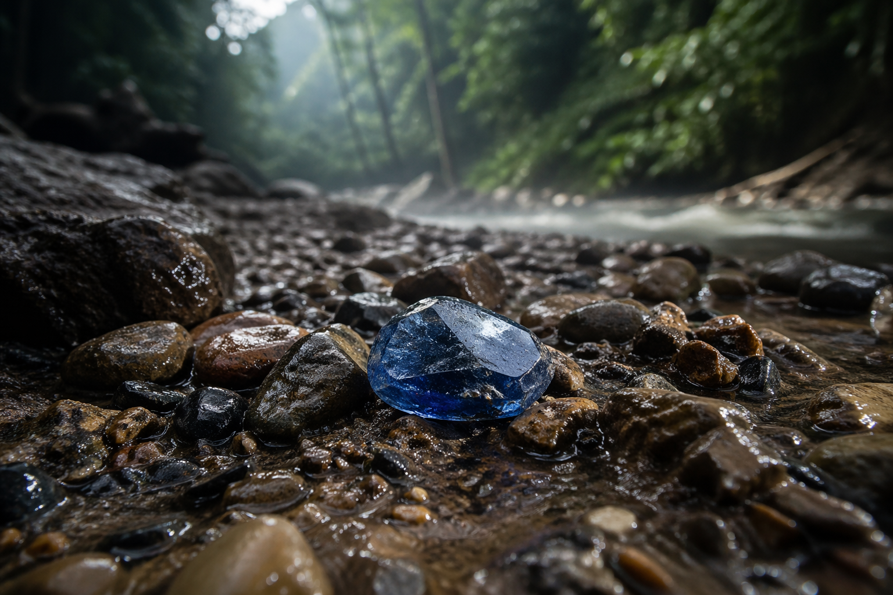
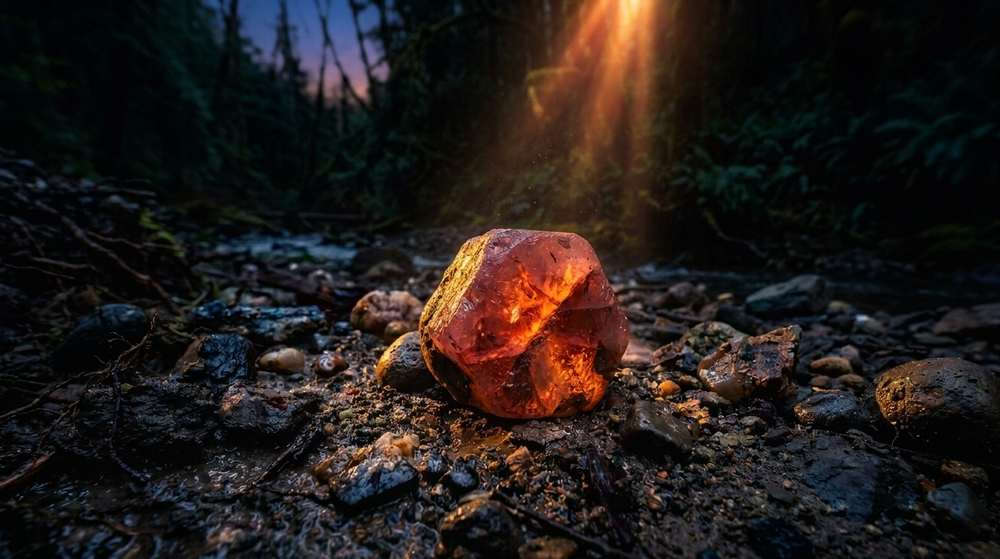

Rough Blue Sapphire Crystal
Blue Sapphires are primarily found in Sri Lanka (Ceylon), Myanmar (Burma), Kashmir, Madagascar, and Australia. The most prized specimens come from the Kashmir region, known for their velvety blue hue.
Throughout history, blue sapphires have symbolized wisdom, virtue, and divine favor. Ancient Persians believed the Earth rested on a giant sapphire whose reflection colored the sky blue. Medieval clergy wore sapphires to symbolize Heaven, while royalty valued them as protection from envy and harm.
Blue sapphires form in metamorphic rocks and alluvial deposits. Their blue color comes from traces of iron and titanium within the corundum crystal structure. Rough sapphires often appear as hexagonal prism crystals before cutting.
Kashmir, India: Produced the finest "cornflower blue" sapphires (1881-1887).
Myanmar (Burma): Known for intense "royal blue" sapphires.
Sri Lanka: Produces light to medium blue "Ceylon" sapphires.
Madagascar: New source with high-quality blue sapphires since 1990s.

Rare Lotus-Colored Sapphire
Padparadscha sapphires are primarily found in Sri Lanka, with smaller deposits in Madagascar and Tanzania. The name comes from the Sinhalese word for "lotus flower," describing their unique pink-orange hue.
Considered the rarest of all sapphires, Padparadscha has been treasured by Sri Lankan royalty for centuries. Ancient texts describe these stones as "the color of a sunset over the Indian Ocean." Today, they are among the most valuable colored gems, often exceeding blue sapphires in price.
True Padparadscha sapphires display a delicate balance of pink and orange, often described as a "sunset" or "lotus blossom" color. The most valuable stones have 50-70% pink and 30-50% orange with even saturation.